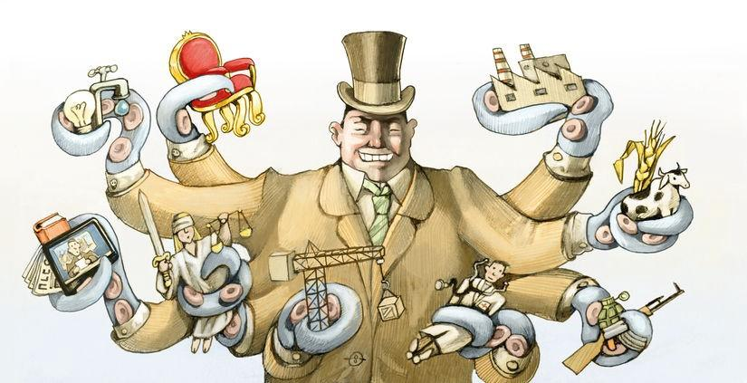

The Truth About Capitalism
topics: democracyequalitysocietyvalue creation
9 min read

No matter which way you lean politically, you probably have strong feelings about capitalism. It seems to me that there are a lot of odd ideas on this topic running around out there in today's world. Let me offer some thoughts about what seems true to me.
1. Capitalism is not evil.
At its essence, capitalism is an economic system that does the following things:
a. Organizes useful work in order to maximize overall productivity;
b. Allows individuals and organizations to freely buy and sell products and services from and to whomever they like, at whatever prices they can negotiate;
c. Generates a surplus, in the form of products and services not immediately needed to satisfy the basic needs of members of society;
d. Provides a means for storing that surplus so that it can be used at a later date;
e. Provides incentives for individuals and organizations to invest some of their surplus, not in items and services that are directly and inherently pleasing, but to provide land, buildings, machinery and startup expenses so that labor can be employed ever more efficiently to produce better, more desirable goods and services.
Now, no particular implementation of capitalism is perfect at achieving all of these goals, but this doesn't mean that there is anything fundamentally wrong with capitalism. Sometimes our economic system needs a tune-up, or even a repair. But we don't say that the internal combustion engine is fundamentally flawed just because our car is running a little rough; instead we take it to a mechanic to make it operate in accordance with its design. I suggest that we think of capitalism in the same way.
2. Capitalists are not evil.
A capitalist is someone whose activities generate a surplus, and who decides to invest some of that surplus in the creation, expansion or improvement of various commercial ventures. Without capitalists, we could not have capitalism. If capitalists were not motivated to achieve some reasonable return on their capital, then we could not have capitalism.
3. Capitalism by itself is insufficient.
Our economic system is an important part of our society. But it does not, and should not be expected to, make up all of our society. Even when our engine is running like a top, we still need other components to put together a fully-functioning automobile.
4. Capitalism is too important to leave it up to the capitalists.
People sometimes listen to people like Warren Buffett or Jeff Bezos as if they were especially qualified to tell us how capitalism ought to work. Hey, these are really smart people. And they have a role to play. But, just as Greek economist Yanis Varoufakis has said that “…the economy is too important to leave to the economists,” we should insist that the running of capitalism is too important to leave to the capitalists.
5. Capitalism should not be confused with feudalism.
When we look at a businessman like Donald Trump, or a large corporation like Amazon, we are sometimes tempted to think of these business leaders as if they were feudal lords, and the rest of us their serfs. And certainly the way some leaders operate, and the working conditions at some companies, and the arbitration clauses forced on workers at some companies (just to name a few factors) might sometimes lead us to think of our relationships along these lines.
But as American technologist Tim O'Reilly has noted:
Future economic historians may look back wryly at this period when we worshipped the divine right of capital while looking down on our ancestors who believed in the divine right of kings.
If our economic system is treating us more like serfs than like citizens, then it's probably time for a few tweaks (if not a complete rebuild).
6. The freedom of markets should not be regarded as absolute.
As Israeli historian Yuval Noah Harari has pointed out:
In a completely free market, unsupervised by kings and priests, avaricious capitalists can establish monopolies or collude against their workforces. If there is a single corporation controlling all shoe factories in a country, or if all factory owners conspire to reduce wages simultaneously, then the labourers are no longer able to protect themselves by switching jobs.
Free markets are generally a good thing. But government has an important role to play in terms of ensuring:
- a level playing field;
- a reasonable balance between competing interests;
- adequate protections against harm for individuals as well as community resources;
- a certain level of accountability, for all economic players.
It is entirely natural for capitalists to be avaricious; it is altogether unnatural to allow their avarice to go unchecked.
7. None of us should cede our entire identity to our economic role.
You may be a capitalist. I may be a worker. A friend may be a government official. But these are transitory roles, not assigned social classes in a rigid caste system. We are all, first and foremost, human. And secondly, we are members of a common society. If we cannot sit down together for a companionable meal, or go watch a movie together, then something is amiss.
8. There is no good reason for workers to get the short end of the stick.
As American president Abraham Lincoln once pointed out:
Labor is prior to, and independent of, capital. Capital is only the fruit of labor, and could never have existed if labor had not first existed. Labor is the superior of capital, and deserves much the higher consideration.
This doesn't mean that every worker will earn as much as the CEO. But it does mean that there is no reason for us to put up with the degree of inequality that has become common today.
As English journalist Edward Luce has observed:
The golden decades of the post-war era bore out the theory of declining inequality. But over the last thirty years that has gone into reverse. During those decades, the share of the US economic pie divided between labour and capital was roughly 70:30. Capital's share – the flows taken up by returns on financial assets rather than wages and salaries – has since risen to a level not seen since the days of The Great Gatsby. The gap between the pay of the average chief executive and their employees has risen tenfold since the late 1970s to around four hundred.
9. Capitalism requires compromise and balance.
American industrialist Frank W. Abrams has noted that capitalism must “… maintain an equitable and working balance among the claims of the various directly affected interest groups: stockholders, employees, customers and the public at large.”
Of course, figuring out what constitutes an “equitable and working balance” is never easy and requires constant rejiggering. And, of course, this is not a question that should be left to the capitalists to answer.
10. Capitalists have an unnerving tendency to deplete their supply of customers.
Capitalists naturally want to pay their workers as little as possible, because labor is an expense, and capitalists seek to minimize expenses and maximize output. The smarter ones, however, tend to realize that their workers should also be their customers, so if their workers cannot afford to buy their products, then something has gotten out of whack. Capitalists are especially likely to fall prey to this problem if they are unduly focused on short-term returns.
Walter Reuther, the pioneer UAW organizer, told the story of a conversation with a Ford executive who was showing Reuther his new factory robots. “How are you going to collect union dues from all these machines?” the executive smugly inquired. Reuther said he replied, “You know, that is not what's bothering me. I'm troubled by the problem of how to sell automobiles to them.”
11. Capitalism is incomplete without a strong democracy.
If our capitalistic system is not working properly, then our elected officials are the mechanics who must get it back in tune. If they are not up to the job, then we must vote them out and vote new ones in.
12. The ascendance of global corporations has made the management of capitalism more difficult.
Most large companies today have multinational labor forces, multinational customer bases, and multinational supply chains. Yet workers are not nearly as mobile as corporations, and governments are still constrained by national boundaries. This inevitably tilts the playing field in favor of shareholders and customers, and against workers and governments trying to represent public interests.
More fundamentally, the rise of global companies has muddled our very notion of society. We may say that capitalism is here to serve society, but when companies like Apple, Google and Boeing acquire resources from all over the world, farm out work all over the world, and sell to customers all over the world, then which of the many societies in which they operate are they supposed to be serving? And who is in a position to judge if they are adequately serving the interests of society at large?
In such an environment there is a strong tendency to simply throw up our collective hands and allow capitalists and consumers free reign to operate without any consideration for workers and public interests.
This is a tendency that must be resisted.
13. Human population growth also makes the management of capitalism more difficult.
Capitalists tend to worship growth as a supreme good. More people mean more consumers, more workers and greater revenue.
On the other hand, if capitalism is supposed to meet the basic needs of all members of society, then constantly increasing the size of that population makes the achievement of that goal more difficult, and again – as with global corporations – may weaken our societal resolve to even hold capitalism accountable for meeting that goal.
More and more people constantly competing for a fixed or dwindling set of resources – is it really worth the effort to try to divide up the pie equitably, when it's so much easier just to say “every man for himself” and grab what you can for you and yours?
Again, this is a destabilizing force that must be constrained and resisted.
14. We need better government.
As I've pointed out above, there is nothing fundamentally wrong with capitalism, and capitalists are just doing what they are supposed to do. However it is up to our governments to establish the playing field and the rules of engagement within which capitalists operate, and to enforce those rules. Unfortunately, capitalists seem to be much better at making money than our governments have been at helping to ensure that profits are distributed equitably.
In order to fix the system, we don't need to vilify capitalistic principles in general, or capitalists in particular.
We just need political leaders who will ensure that capitalists are actually doing a reasonable job of serving society.